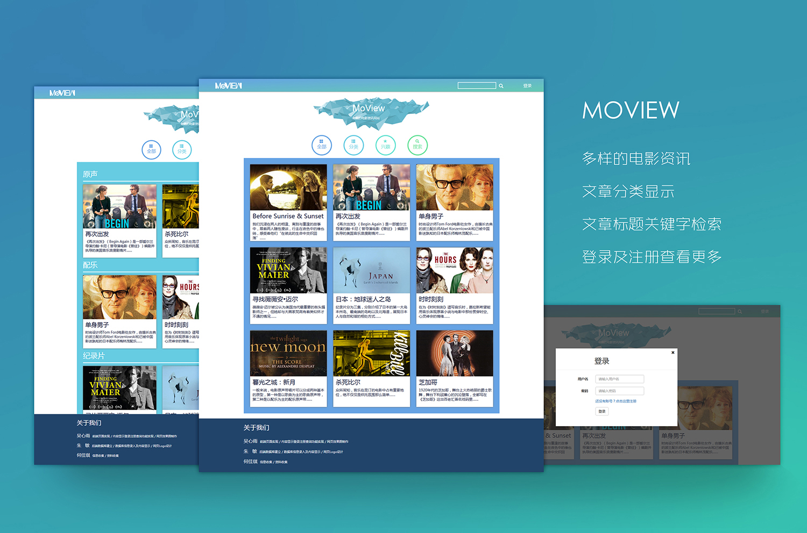

观影
相册
作品
关于


“曼哈顿就应是一个黑白的城市”，自以为是、愤世嫉俗，对生活抱怨不断却束手无策，想成为艺术家却害怕牺牲，还有对死亡的恐惧，是纽约一代知识青（中）年的精神写照，更是现代社会大多数人的写照，他们缺乏自信又缺乏自知。
人们对我最大的两个误解是：他们仅仅因为我戴眼镜就认为我是知识分子；他们总以为我是艺术家，因为我的电影总是赔钱。 这两个误解曾盛行一时。
约翰卡尼很会抓人心，不论是音乐还是用音乐讲故事的方式。从《曾经》到《再次出发》再到《唱街》虽然越来越主流，但也越来越成熟，故事有缺陷，但用音乐讲述就变得魅力十足，扣人心弦。2016最爱的一张原声！
2016-6

JSP程序设计结课作业，
以小组形式完成，并在组内担任前端开发、网页内容读取以及操作数据库数据等工作。
前端部分运用HTML/CSS完成，部分样式使用bootstrap框架完成。
服务器端运用JSP生成页面上的动态内容以及处理请求。
数据库建立运用MySQL，并使用JDBC连接数据库。
2015-2016
自制电影海报练习
吴心雨
自诩迷影青年，热爱伍迪·艾伦、埃里克·侯麦、安东尼奥尼
努力学习前端开发……